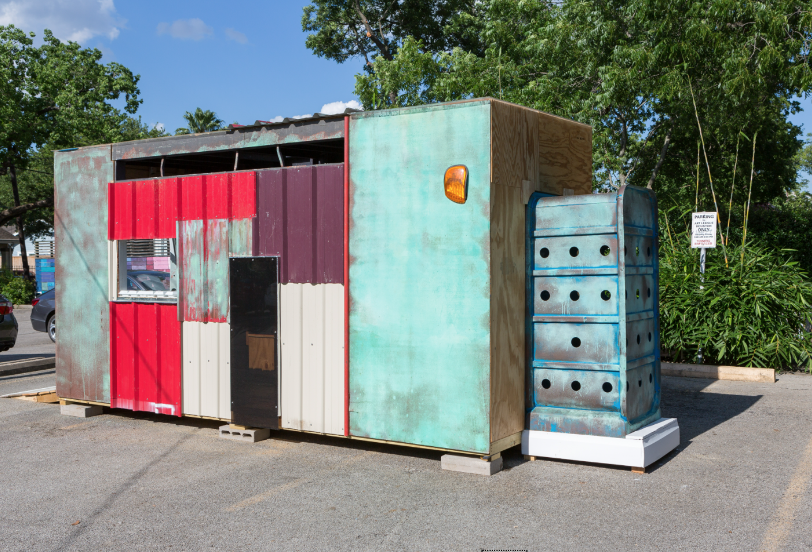
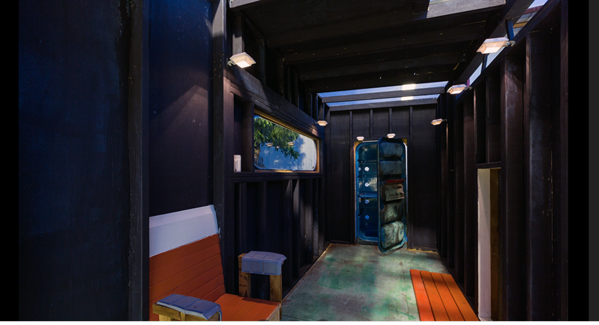

Sustainable Lifeguard Chair
Public Art / Sculpture / Social Practice

About the Work
Sustainable Lifeguard Chair reimagines the familiar form of the lifeguard tower as a speculative public structure. Positioned between utility, architecture, sculpture, and social space, the project questions how public objects can be repurposed to support community engagement, environmental awareness, and collective use.
The work transforms an iconic symbol of observation and protection into a multifunctional platform. By shifting its original purpose, the structure invites viewers to consider alternative relationships between public infrastructure, sustainability, and shared responsibility.
Through sculpture and site-responsive intervention, the project explores how design can activate dialogue about ecology, public space, and the future of civic environments.
